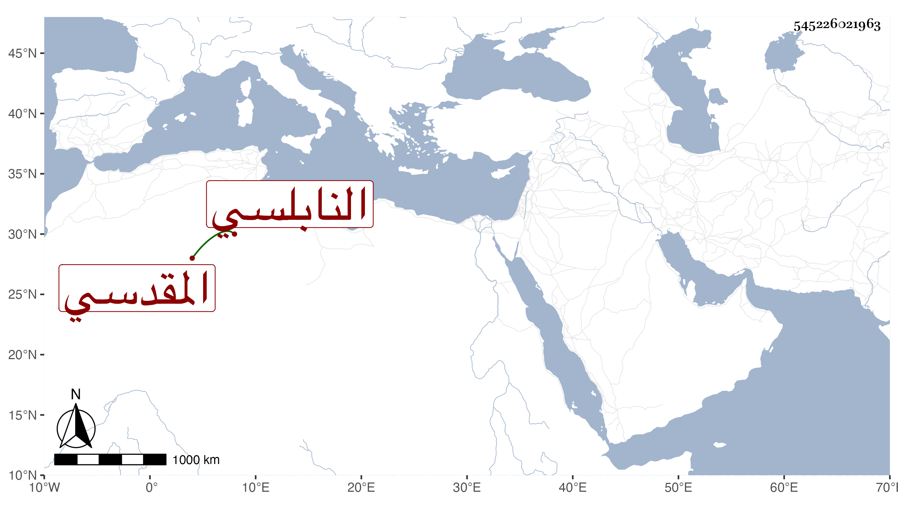

0902Sakhawi.DawLamic.ITO20230111-ara1.EIS1600.545226021963
Biography ID: 545226021963
245
محمد بن أحمد بن موسى بن نجاد ناصر الدين أبو عبد الله بن الأمير الشهاب أبي عبد الله بن أبي بكر النابلسي المقدسي ، أجاز له في سنة ست وخمسين الحفاظ الثلاثة ابن كثير والعلائي والشهاب أبو محمود والرمثاوي وأبو الحرم القلانسي وناصر الدين التونسي والبياني وابن الخباز وأبو العباس بن الجوخي وآخرون وحدث سمع منه الفضلاء كابن موسى والآبي في سنة خمس عشرة . وذكره شيخنا في معجمه وقال : أجاز لأولادي . وكذا ذكره ابن فهد وآخرون .
